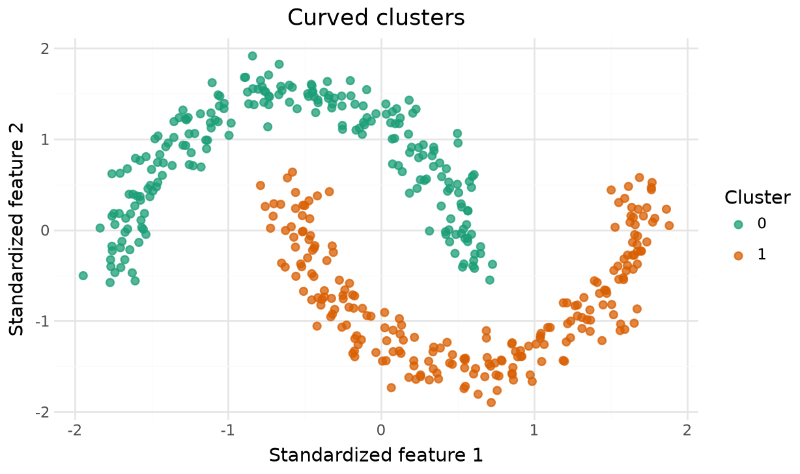
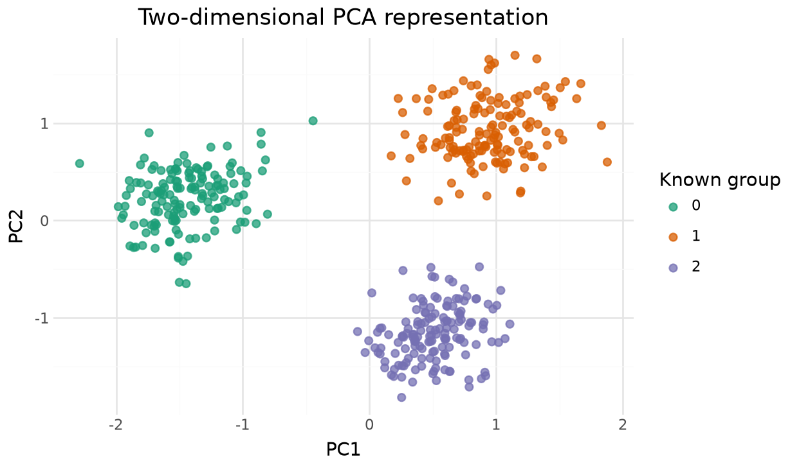
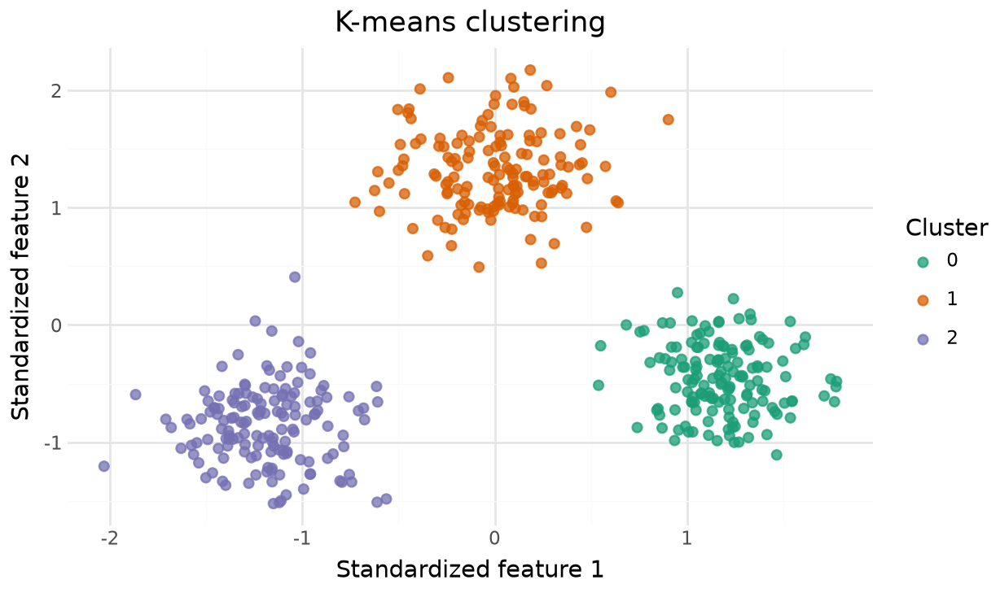
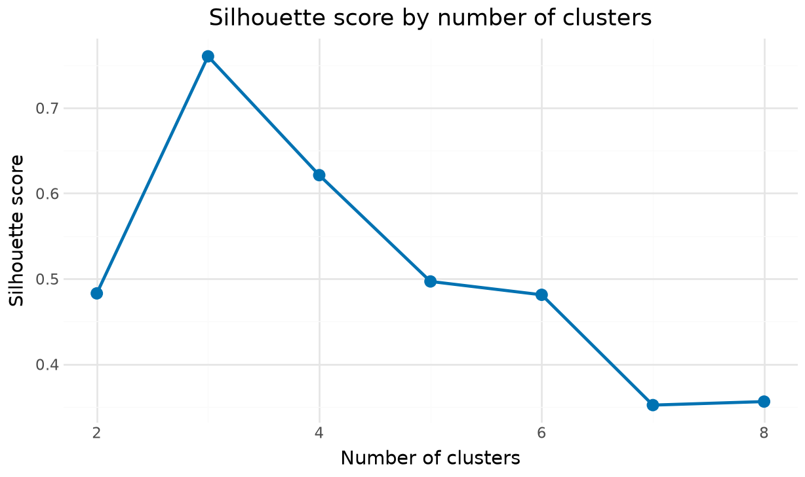
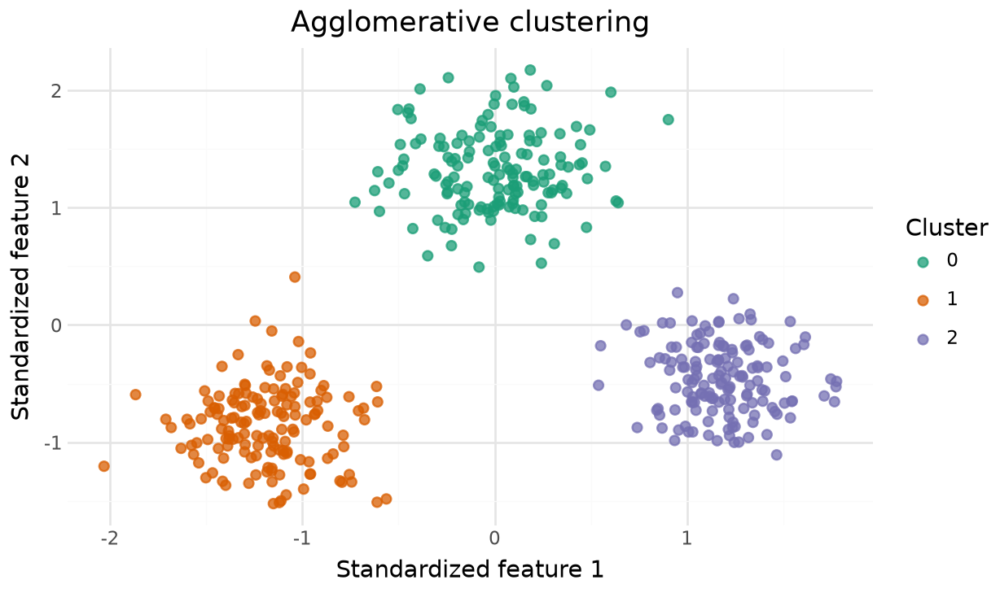
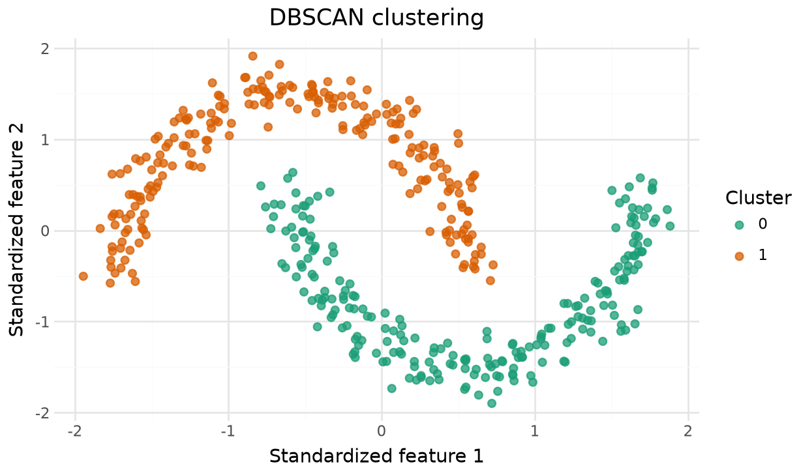
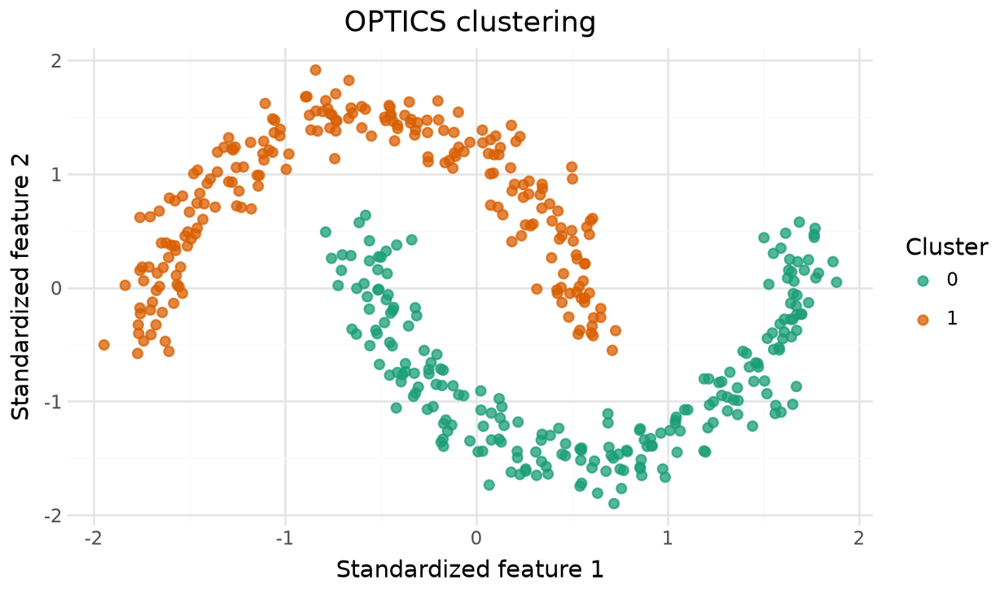
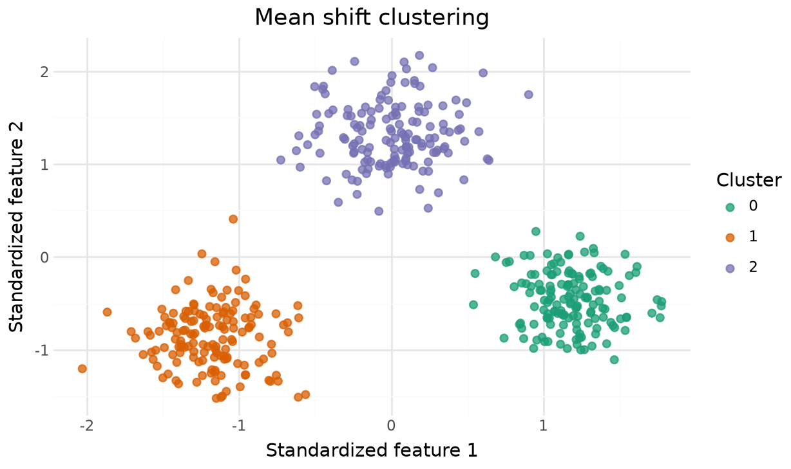
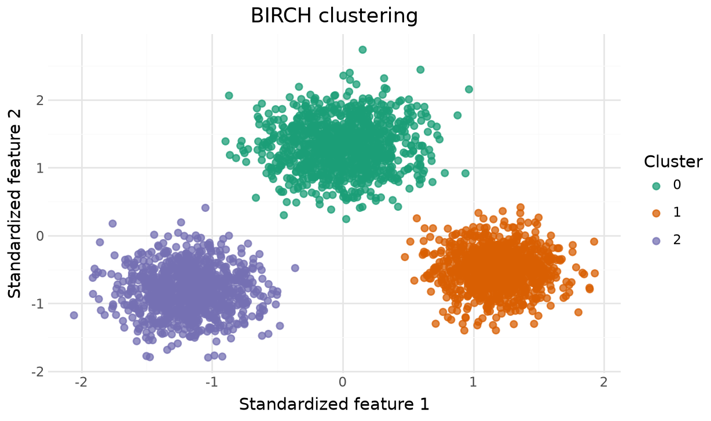
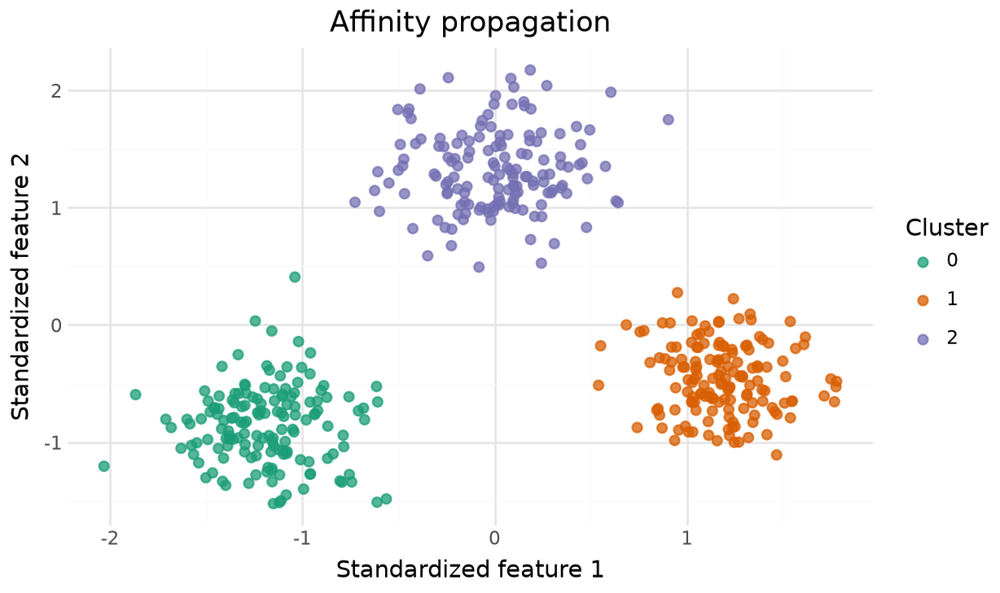

Unsupervised
Machine Learning
2026-12-01
Unsupervised Machine Learning
Clustering Techniques
Density and Graph Methods
Selecting and Evaluating a Model
Supervised learning uses features and a known outcome:
\[ \boldsymbol X = (X_1, X_2, \ldots, X_n)\mrTr \]
where
\[ X_i = (x_{i1}, x_{i2}, \ldots, x_{ip}) \]
and
\[ \boldsymbol Y = (Y_1, Y_2, \ldots, Y_n)\mrTr. \]
The outcome \(Y_i\) guides the model during training.
Unsupervised learning uses the feature matrix without a known outcome:
\[ \boldsymbol X = (X_1, X_2, \ldots, X_n)\mrTr, \]
where each observation contains \(p\) features:
\[ X_i = (x_{i1}, x_{i2}, \ldots, x_{ip}). \]
Clustering searches for groups whose members are more similar to one another than to members of other groups.
Cluster labels describe structure in the available features. They do not automatically represent meaningful real-world categories.
Distance-based algorithms can give variables with large numerical ranges too much influence.
Standardization gives each feature a mean near 0 and a standard deviation near 1. Fit the scaler on training data before transforming new data in a production workflow.

The known groups appear only to explain the synthetic examples. The clustering models do not receive these labels.
Principal component analysis (PCA) creates new, uncorrelated variables called principal components.
pca = PCA(n_components=2)
X_pca = pca.fit_transform(X_blobs)
pca_data = pd.DataFrame(
X_pca,
columns=["PC1", "PC2"],
).assign(group=pd.Categorical(blob_truth.astype(str)))
(
ggplot(pca_data, aes("PC1", "PC2", color="group"))
+ geom_point(alpha=0.75, size=2)
+ scale_color_brewer(type="qual", palette="Dark2")
+ labs(
title="Two-dimensional PCA representation",
color="Known group",
)
+ theme_minimal()
+ theme(figure_size=(6.4, 3.8))
)
Unsupervised Machine Learning
Clustering Techniques
Density and Graph Methods
Selecting and Evaluating a Model
| Family | Definition of a cluster | Examples |
|---|---|---|
| Centroid based | Points near a common center | K-means, MiniBatch K-means |
| Hierarchical | Points joined through a nested sequence | Agglomerative clustering, BIRCH |
| Density based | Points in connected dense regions | DBSCAN, HDBSCAN, OPTICS |
| Graph based | Points connected strongly in a similarity graph | Spectral clustering, affinity propagation |
| Probabilistic | Points generated by a shared probability distribution | Gaussian mixture models |
K-means assigns each observation to the nearest cluster center and updates the centers until the assignments stabilize.
The algorithm minimizes the within-cluster sum of squares:
\[ \sum_{k=1}^{K}\sum_{x_i \in C_k} \lVert x_i-\mu_k \rVert^2. \]
K-means works best for compact clusters of comparable size. You must choose \(K\) before fitting the model.

Use predict() to assign new observations to the fitted centers.
k_results = []
for k in range(2, 9):
model = KMeans(
n_clusters=k,
n_init="auto",
random_state=42,
)
labels = model.fit_predict(X_blobs)
k_results.append(
{
"k": k,
"silhouette": silhouette_score(X_blobs, labels),
}
)
k_results = pd.DataFrame(k_results)
(
ggplot(k_results, aes("k", "silhouette"))
+ geom_line(color="#0072B2", size=1)
+ geom_point(color="#0072B2", size=3)
+ labs(
title="Silhouette score by number of clusters",
x="Number of clusters",
y="Silhouette score",
)
+ theme_minimal()
+ theme(figure_size=(6.4, 3.8))
)
Prefer a larger silhouette score, then check whether the grouping makes sense for the problem.
MiniBatch K-means updates cluster centers from small batches rather than the full dataset. It usually runs faster on large datasets, with a possible loss in cluster quality.
Bisecting K-means repeatedly splits an existing cluster into two. This produces a hierarchy while retaining the speed and center-based interpretation of K-means.
Hierarchical methods form nested clusters.
AgglomerativeClustering provides Ward, complete, average, and single linkage.

Ward linkage minimizes the increase in within-cluster variance. Other linkages can use non-Euclidean distance metrics.
A Gaussian mixture model assumes that several Gaussian distributions generated the data.
predict() produces a cluster assignment.predict_proba() produces the probability that an observation belongs to each component.The Bayesian information criterion (BIC) can help compare models with different numbers of components.
Unsupervised Machine Learning
Clustering Techniques
Density and Graph Methods
Selecting and Evaluating a Model
Density-based methods search for connected regions containing many nearby observations.
-1.These methods often work better than K-means when groups have irregular shapes.
DBSCAN links core observations that have at least min_samples observations within distance eps.

A small eps may label many observations as noise. A large eps may merge separate groups.
HDBSCAN examines cluster structure across several density levels. It can handle groups with different densities more effectively than one global DBSCAN radius.
min_cluster_size controls the smallest group the algorithm will retain.
OPTICS orders observations by reachability. This exposes density structure without committing to one neighborhood radius before fitting.

xi controls how sharply the reachability plot must change to separate clusters.
Spectral clustering builds a graph of nearby observations, embeds that graph, and clusters the embedding. It works well when groups are connected but not compact.
Spectral clustering can become expensive as the number of observations grows.
Mean shift moves observations toward local peaks in the estimated density. The fitted peaks serve as cluster centers.

Bandwidth strongly affects the number of detected clusters.
BIRCH incrementally summarizes observations in a clustering feature tree. It supports large datasets and can process data in batches.

The threshold controls the radius of the subclusters stored in the tree.
Affinity propagation passes messages between observations and selects representative observations called exemplars. The algorithm estimates the number of clusters from the data.

The preference value influences how many exemplars the model selects.
Unsupervised Machine Learning
Clustering Techniques
Density and Graph Methods
Selecting and Evaluating a Model
| Technique | Must choose cluster count? | Irregular shapes? | Identifies noise? | Best use |
|---|---|---|---|---|
| K-means | Yes | No | No | Compact, similarly sized groups |
| Agglomerative | Usually | Sometimes | No | Nested structure and smaller datasets |
| Gaussian mixture | Yes | Elliptical | No | Probabilistic membership |
| DBSCAN | No | Yes | Yes | Similar-density groups with noise |
| HDBSCAN | No | Yes | Yes | Groups with varying density |
| OPTICS | No | Yes | Yes | Exploring several density levels |
| Spectral | Yes | Yes | No | Connected, nonlinear groups |
| Mean shift | No | Sometimes | Optional | Density peaks in moderate datasets |
| BIRCH | Optional | Limited | No | Large datasets and streaming batches |
| Affinity propagation | No | Limited | No | Exemplar-based clusters in smaller datasets |
When no correct labels exist, internal measures compare compactness and separation.
| Measure | Preferred value | Main idea |
|---|---|---|
| Silhouette score | Larger, up to 1 | Compares within-cluster and nearest-cluster distances |
| Davies-Bouldin index | Smaller, at least 0 | Compares within-cluster spread with separation |
| Calinski-Harabasz score | Larger | Ratio of between-cluster to within-cluster variation |
Metrics can favor simple geometric groups. Also inspect stability, domain meaning, and sensitivity to tuning choices.
| measure | value | |
|---|---|---|
| 0 | Silhouette | 0.760352 |
| 1 | Davies-Bouldin | 0.331706 |
| 2 | Calinski-Harabasz | 2378.207866 |
Remove observations labeled -1 before computing these measures for a density-based model.
Some clustering estimators support predict(). Others only assign labels to the observations used during fitting.
The examples use the estimator pattern found throughout scikit-learn:
| Technique | Purpose | Example estimators |
|---|---|---|
| Manifold learning | Nonlinear low-dimensional representations | TSNE, Isomap, MDS, LocallyLinearEmbedding |
| Matrix decomposition | Components, sources, or topics | NMF, FastICA, DictionaryLearning, LatentDirichletAllocation |
| Anomaly detection | Unusual observations or novel cases | IsolationForest, LocalOutlierFactor, OneClassSVM |
| Density estimation | Estimate an unknown probability density | KernelDensity |
| Biclustering | Cluster rows and columns together | SpectralCoclustering, SpectralBiclustering |
| Covariance estimation | Estimate feature dependence robustly | LedoitWolf, MinCovDet, GraphicalLasso |
PCA and the clustering methods from this lecture represent only part of scikit-learn’s unsupervised learning toolkit.